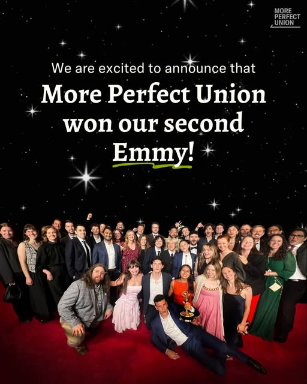

Instagram Post

OpenAI CEO Sam Altman has announced that his company reached an agreement...
video transcript (enriched by ClaudeClaw)
Summary
[CAPTION]
OpenAI CEO Sam Altman has announced that his company reached an agreement with the “Department of War.”
The agreement allows the Pentagon to use its AI models in the department’s classified network.
[VIDEO]
Watch this clip of Sam Altman having a very strange reaction to an interviewer...
[CAPTION]
OpenAI CEO Sam Altman has announced that his company reached an agreement with the “Department of War.”
The agreement allows the Pentagon to use its AI models in the department’s classified network.
[VIDEO]
Watch this clip of Sam Altman having a very strange reaction to an interviewer who's pretty friendly to big tech, and I'll explain in a second. How can a company with 13 billion in revenues make 1.4 trillion of spend commitments? And you've heard the criticism, Sam. We're doing well more revenue than that. Second of all. Brad, if you want to sell your shares, I'll find you a buyer. I just enough. So why does Altman seem so upset here? After all, this interviewer is just pointing out a basic fact that OpenAI has committed to spend over one trillion dollars on AI infrastructure over the next eight years, despite only bringing in around $13 billion a year in recurring revenue, less than 1% of what they're promising to spend. I'm no money genius, and I'm personally terrible at budgeting, but that doesn't seem great. Most of the supposed growth in the American economy in 2025 was caused by investment in AI. That's all part of a promise being made by the industry led by Sam Altman. That once a certain level of machine learning intelligence is reached, all of our problems will be solved. The housing crisis, cancer, poverty, climate change, mental health, democracy, universal basic income care, a bunch of diseases, disc cancer and that one, and heart disease, helping you try to accomplish your goals and be your best. Very high quality healthcare. Important new scientific discoveries. The marginal cost of energy are gonna trend rapidly towards zero. The more equal world, universal extreme wealth for everybody. In exchange for all that, Altman is asking all of society to put all of our eggs, our data, our economy, our water and resources, everything into one basket. His. He's offering us one massive just trust me, bro. So should we trust Altman? Should we accept his deal? Is it even our choice? Altman isn't a technologist or scientist. He's an investor and dealmaker, and really good at it, supposedly. But his whole career is a series of just trust me, bro, moments. So let's examine the deal Altman is offering all of us. Should we believe Sam Altman's promises? And what's the cost to the rest of us if those promises turn out to be lies. So let's go back and look closer at Altman's early days in the tech industry. Altman's first big deal was selling his first company, Loopt, a service for locating your friends. That's something that inherently needs lots of users to work, or else you're just locating yourself. The operative idea seems to be ubiquity. I mean, get it out there in more ways than you can possibly imagine. And make the anybody. But the whole time, Loopt refused to say how many users they had. Altman just insisted there were, quote, way more users than any other similar service. It turns out, though, that towards the end, Loopt only had 500 users. When Reuters reported this, Altman insisted it was a hundred times more than that, and that he'd provide evidence. He never did. Just trust me, bro. Loop sold to the Greendot Corporation, who shut it down immediately and never used any of the tech. Greendot investors allege it was a dirty deal done to enrich Sequoia Capital, a VC firm with a stake in Loot, and two board members at Greendot, who helped approve the deal. Altman left Greendot as soon as he was legally able, walking away with millions for building an app that no longer existed in any form. And luckily for Altman, someone saw something in him. Peter Thiel. Thiel, who once said that Altman should be treated as, quote, more of a messiah figure, gave Altman millions to start his own VC firm, Hydrazine Capital. And that's not all the capital Altman controlled. He was also hired as president of Y Combinator, or YC, an influential venture capital firm and startup incubator, where Looped got its original funding. I think the president of YC is sort of the unofficial leader of the startup movement. And Altman personally traded on that influence. The New Yorker reports that up to 75% of Hydrazine's capital was invested in YC companies. Altman used his inside view to get a cut of YC's power, despite Altman promising he didn't cross-invest in YC companies. That's two big lies so far. The user base of Looped that needed users to exist, and his investments. In 2015, Altman leads YC into the investment you likely most know him for. He's sort of a semi-company, semi-nonprofit, uh doing AI safety research. OpenAI was launched as the supposed nonprofit OpenAI Foundation, with a charter with a lot of lofty goals, a primary fiduciary duty to humanity, and avoiding enabling uses of AI or AGI that harm humanity or unduly concentrate power, while acting to minimize conflicts of interest among our employees and stakeholders. The evidence that they'd do that? Just trust me, bro. OpenAI's primary financial backers were tech billionaires and millionaires like Altman himself, Peter Thiel, Reed Hoffman, and Elon Musk, and tech companies like Amazon Web Services and Infosys. We wanted to build this with humanity's best interest at heart. But in exchange, OpenAI is asking for a lot, putting all of society's eggs in one basket, if you will. They want electricity, water, infrastructure, capital, your data, your writing, your art, and for humanity to adjust to job loss, deepfakes, and everything else. All in exchange for some future promise of technology that fixes everything. So can we trust him with all of this? Let's look at some of his biggest statements and promises to show how they tie to all the eggs in the basket. Altman insists he doesn't own any of OpenAI and he barely takes his salary. I paid enough for health insurance, I have no equity in OpenAI. I'm doing this because I love it. But he doesn't hide that he's already rich, trying to do a rich guy using money for good Batman thing. That Batman, such a wonderful person, and I don't deserve it. But we millionaires decided that you do. But let's look at how this is part of his honesty problem. And it ties in to the eggs in the basket, because Altman is invested in all the stuff necessary to build OpenAI. One of the eggs OpenAI needs is a ton of data. You can't build a large language model without examples of language and content. And one source of that data is Reddit. Altman owns a big share of the social networking site and was on its board until 2022. Reddit got its start in the same inaugural Y Combinator class as Loot. Here's Altman standing next to Reddit co founder Aaron Swartz in 2005. Swartz died by suicide in 2013 after being criminally charged for reproducing academic articles online and breaking copyright law. In 2015, Altman made a deal with Reddit, allowing OpenAI to, quote, basically aggressively scrape everything posted on the site to feed into OpenAI's tech. Reddit co-founder Alex O'Hanian felt in his bones the deal was wrong. It's a less noble version of what Reddit co-founder Aaron Schwartz was targeted by law enforcement for. Swartz wanted to open the knowledge up to everyone. Altman wanted to put it in his product. In 2014, Altman promised that he and other investors would give 10% of Reddit's value back to the Reddit community. That never happened due to regulatory issues. But just like Reddit's data going to OpenAI, a look at the areas Altman's wealth is invested in show a deep connection to other needs of the organization. He's invested in AI networking equipment companies, thermal battery companies, and even companies mining the rare earth metals that server farms require. And, once it's all built, Altman will profit off the problems AI creates. We're gonna focus on three. Altman says again and again that OpenAI needs more power. The quote, audacious long-term goal is to build 250 gigawatts of capacity by 2033. That much compute would require as much electricity as 1.5 billion people, the equivalent of the entire population of India. But Altman has a solution. Since they first met in the early 2000s, Peter Thiel and Sam Altman have had a shared interest, investing in nuclear power, which isn't inherently bad, of course. Nuclear can be an extremely efficient and clean form of energy. But Thiel and Altman want to own it. Altman has invested in Helion and Oaklo. Helion is working to build the first ever nuclear fusion power plant, a type of energy creation that many scientists say won't work. And Oaklo is building micro reactors, literally truck-sized nuclear reactors. Which is a bit concerning considering this investment strategy. Part of our model is to make the cost of mistakes really low, and then make a lot of mistakes. But for now, Oaklo hasn't figured their reactors out yet, and are just using gas to keep up with the promises they made. Nuclear startup Oaklo and natural gas firm Liberty Energy today announcing a partnership to provide energy to large-scale customers. Altman has also invested in multiple companies offering protection against AI bad actors, identity verification to prevent deep fakes, and even companies offering insurance for losses due to AI scams and hacking. That's like Batman not making any money off of crime fighting, but then selling Batmobile drove into my house insurance. While also running the Uber for Henchman startup that the Riddler uses and selling the Joker white makeup.
View original on Instagram Post →